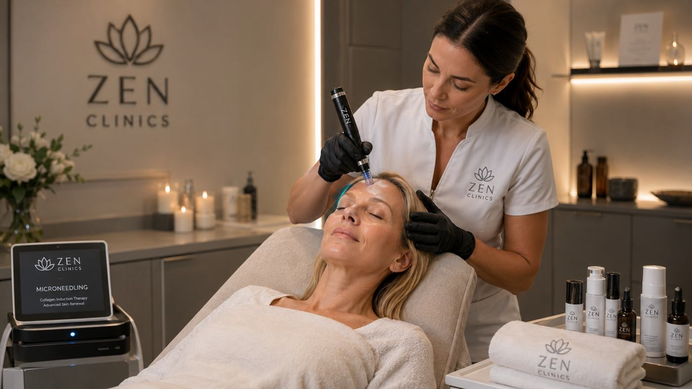
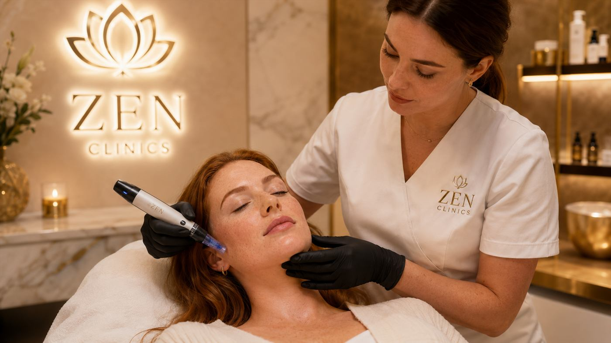
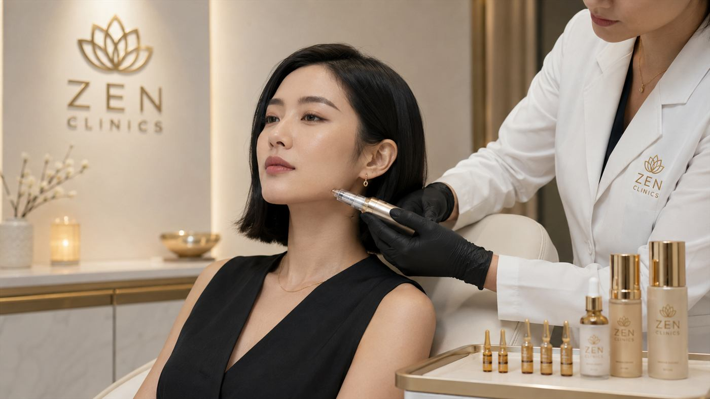

Textura neuniforma
Poate fi discutat pentru piele cu aspect neregulat, pori vizibili sau luminozitate redusa.
Rejuvenare cutanata
Stimulare controlata a pielii pentru textura, luminozitate si o rutina de ingrijire adaptata nevoilor tale.
Abordare
Microneedlingul este o procedura minim invaziva care foloseste microstimulare controlata pentru a sustine procesele naturale de reinnoire ale pielii. Poate fi discutat pentru textura neuniforma, aspect tern, pori vizibili, semne fine sau ingrijire de intretinere.
La ZEN Clinics, protocolul se stabileste individual, in functie de tipul pielii, sensibilitate, istoricul medical si obiectivele realiste. Accentul ramane pe confort, dozaj corect, recomandari clare si integrarea procedurii intr-un plan estetic coerent.
Cadru vizual



Indicatie
Procedura se recomanda doar dupa evaluare. Nu inlocuieste diagnosticul dermatologic si nu se aplica in aceleasi conditii pentru toate tipurile de piele.
Poate fi discutat pentru piele cu aspect neregulat, pori vizibili sau luminozitate redusa.
Are ca obiectiv sustinerea calitatii pielii, fara promisiuni de transformare brusca.
Poate fi inclus intr-un protocol periodic, stabilit in functie de toleranta si obiective.
Frecventa si combinatiile cu alte tratamente se stabilesc numai dupa consultatie.
Experienta
Se analizeaza pielea, istoricul, sensibilitatile si asteptarile tale.
Se aleg parametrii si produsele potrivite, in functie de zona si toleranta.
Microstimularea se realizeaza controlat, cu atentie la confort si igiena.
Primesti recomandari pentru ingrijire, protectie si intervale de repetare.
Obiective estetice
Poate contribui la un aspect mai uniform al pielii, in timp si cu protocol adecvat.
Urmareste sustinerea aspectului proaspat, mai ales in protocoale de intretinere.
Are ca obiectiv stimularea controlata, fara rezultate garantate sau promisiuni absolute.
Detalii importante
Rutina de ingrijire, tratamentele recente si sensibilitatile se discuta inainte de procedura.
Pot exista roseata temporara, senzatie de caldura sau sensibilitate usoara. In primele zile se recomanda protectie solara, produse blande si evitarea exfolierii agresive, conform indicatiilor primite in clinica.
Anumite afectiuni, tratamente sau episoade active ale pielii pot amana procedura. Evaluarea este obligatorie.
FAQ
Nu in mod automat. Indicatia depinde de tipul pielii, sensibilitate, afectiuni active si obiectivele discutate in consultatie.
Numarul de sedinte se stabileste individual. Unele obiective pot necesita un protocol etapizat, cu intervale recomandate de specialist.
Poate aparea roseata temporara sau sensibilitate usoara. Recomandarile post-procedura se ofera in clinica, in functie de protocol.
Da, in anumite situatii, dar combinatiile si ordinea tratamentelor se decid dupa evaluare, pentru siguranta si coerenta protocolului.
Depinde de intensitatea protocolului si de reactia pielii. Indicatiile exacte se confirma in clinica.
Experiența
La ZEN Clinics, frumusețea ta este înțeleasă în profunzime. Îmbinăm știința, arta și empatia pentru rezultate care te reprezintă.
Consultatie
Programeaza o consultatie pentru a discuta obiectivele, toleranta pielii si pasii potriviti pentru ingrijirea ta.
Programeaza o consultatie